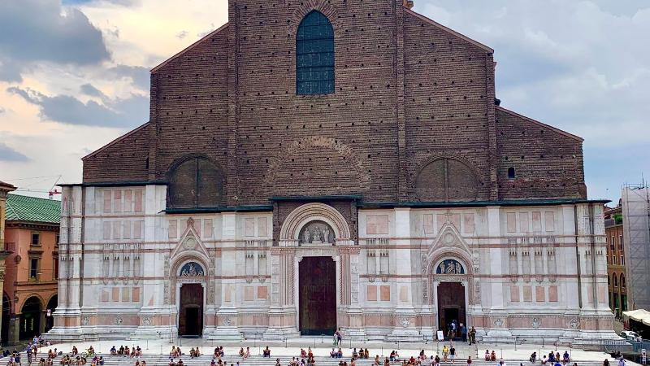
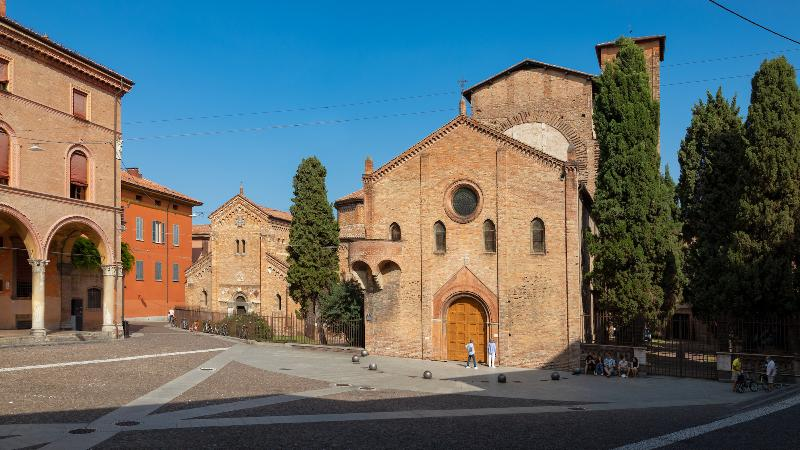
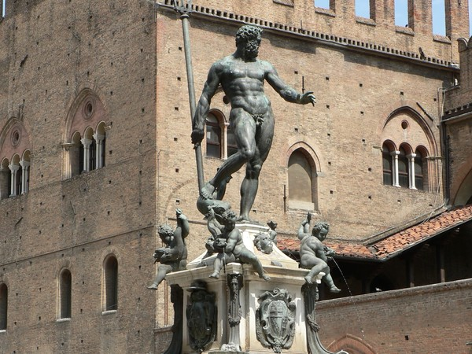

Basilica di San Petronio: L'ambizione Interrotta
- All’interno, ospita la meridiana di Cassini, uno strumento astronomico del 1655, e la Cappella dei Re Magi con affreschi medievali
Santo Stefano: Gerusalemme Bolognese
- 7 chiese interconnesse con simbologia della passione
- Cortile di Pilato:Vasca del XI secolo
Fontana del Nettuno: Simbolo di Potere
- Opera di Giambologna con allegorie di continenti
- Restauro delle dorature originali